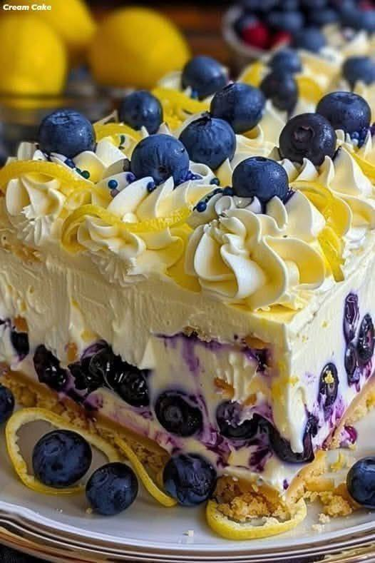

Lemon Blueberry Labneh Cheesecake
A proper baked cheesecake using labneh as the cream cheese base — same lactic-acid tang, same protein-fat richness, same clean set with eggs, no additives or stabilisers. The crust is sorghum flour, millet flour, EVOO, and honey, pre-baked to a golden crumb that holds without crumbling. The filling is labneh, eggs, coconut sugar, and lemon — thick, tangy, and set firm enough to slice cleanly cold. The topping is a partial blueberry compote: some berries burst to release a glossy purple-lemon sauce, the rest stay whole for texture. Blueberries are the most specifically APOE4-targeted fruit in the collection — pterostilbene and anthocyanins with direct blood-brain barrier crossing and amyloid-β inhibition evidence. Lemon provides citrate (kidney stone), hesperidin and limonene (anti-inflammatory citrus flavonoids), and the brightness that makes this taste like a real dessert. Lower carbohydrate per slice than the celebration cakes because the filling contains no flour at all. All six conditions.
🫐 Blueberries — APOE4's most targeted dessert fruit
Pterostilbene (a methylated, higher-bioavailability relative of resveratrol) and multiple anthocyanins — including cyanidin-3-glucoside, the same compound in Recipe 20 (purple sauerkraut) and Recipe 23 (rice paper rolls) — cross the blood-brain barrier. Studies specific to APOE4 show direct inhibition of amyloid-β aggregation and reduction of neuroinflammatory markers. The partial compote preparation retains the whole-berry anthocyanins — a brief 3–4 minute cook releases juice without degrading the polyphenols the way prolonged heating would. GI ~25. Low oxalate at the topping quantity used here.🍋 Lemon — citrate, hesperidin, limonene, vitamin C
The most condition-stacked single ingredient in the topping. Citrate from lemon juice directly inhibits calcium oxalate crystal formation (kidney stone mechanism — lemon is used throughout this collection for exactly this reason). Hesperidin is a citrus flavonoid with anti-inflammatory and blood pressure-lowering evidence. Limonene (from zest) has Nrf2-activating activity — the same pathway as sulforaphane from brassicas and rosmarinic acid from sage/rosemary/thyme. Vitamin C at meaningful levels enhances folate bioavailability (MTHFR). Both the zest and juice are used — zest provides the volatile compounds and flavonoids; juice provides citrate and vitamin C.🥛 Labneh — the cream cheese analogue that actually outperforms it here
Cream cheese is typically 33% fat, stabilised with guar gum and carob bean gum for shelf consistency, and pasteurised to inactivity. Labneh at the 24-hour strain of Recipe 8 is higher in protein (whey removed), lower in additives (none), and live-culture. In baking, the higher protein content means the labneh sets more cleanly with eggs than commercial cream cheese — less tendency to crack, cleaner slice, denser and more satisfying texture. The Lactobacillus culture does not survive the bake (>43°C kills it), but the protein, calcium, and B-vitamins are fully retained. Calcium from the labneh actively binds gut oxalate during digestion — contributing to kidney stone prevention even in a dessert context.🌾 Sorghum 100g + millet 50g — structure and flavour
Sorghum brings the structure and mild sweetness established in the celebration cakes (Recipes 31 and 32). Millet is finer and lighter — at a 2:1 ratio sorghum-to-millet the crust has enough density to hold its shape when sliced out of a springform tin, while the millet prevents it from being brick-hard. The slightly nutty, earthy flavour of both flours is muted by the honey and cinnamon, and becomes a neutral backdrop to the filling.🍯 EVOO + honey — the binder, no butter needed
The combination of olive oil fat and honey sugars acts as the cohesive agent that holds the pressed flour crumb together during baking. Olive oil distributes through the flour particles and creates the fat-starch matrix that firms on heating. Honey adds the slight stickiness that holds the raw crust together before it goes in the oven and adds caramel notes as it bakes. The pinch of Ceylon cinnamon in the crust bridges to the lemon-blueberry filling with a subtle warm note. No psyllium husk needed — the crust is a pressed crumb, not a baked cake, and the fat-honey matrix is sufficient binder.🔑 The press technique — even pressure is everything
The crust thickness must be even or it bakes unevenly — thin edges can burn while the centre is underdone. Use the flat base of a measuring cup or the back of a metal spoon to press firmly with consistent pressure. Work from the centre outward. The pre-bake at 175°C for 10–12 minutes sets the crust to a state where it won't absorb the filling and go soggy. This step cannot be skipped. Cool the crust for at least 10 minutes before adding the filling — adding liquid filling to a hot crust softens it.✅ Why labneh sets better than cream cheese in a baked cheesecake
Cream cheese at standard cheesecake bake temperatures (150–160°C) sets via egg protein coagulation — but the added stabilisers (guar gum, carob bean gum) in commercial cream cheese interfere slightly with even coagulation, which is why commercial cheesecakes crack. Labneh has no stabilisers — it is pure strained protein in an acid environment. With eggs and a tablespoon of tapioca starch as the only structural additions, the labneh filling sets more smoothly and evenly, with less tendency to crack, and produces a denser, more intensely flavoured result. The tapioca starch is the same binder used in the celebration cake flour blend — at 1 tbsp in the filling it adds a small amount of starch that helps the egg-labneh matrix set cleanly and slice without tearing.- Sorghum-Millet Crust
- 100gSorghum flour⬜ zero
- 50gMillet flour⬜ zero
- 1 tbspCoconut sugarGI ~35
- ¼ tspCeylon cinnamonCeylon only
- pinchFine sea salt
- 60mlLight olive oil or EVOO⬜ zero
- 2 tbspRaw honey⬜ zero
- 1–2 tspCold water — only if too dry to press
- Labneh Filling (must be room temperature)
- 600gFull-fat labneh — room temp⚠️ room temp
- 3Large eggs — room temperature⚠️ room temp
- 120gCoconut sugarGI ~35
- 1 tbspRaw honey⬜ zero
- zest of 2Lemons — finely grated⬜ zero
- 3 tbspFresh lemon juice⬜ zero
- 2 tspVanilla extractGF check
- 1 tbspTapioca starch⬜ zero
- pinchFine sea salt
- Blueberry Lemon Topping
- 200gFresh blueberries🟢 low
- 1 tbspRaw honey⬜ zero
- 1 tbspFresh lemon juice⬜ zero
- 1 tspLemon zest⬜ zero
| Ingredient | Per slice |
|---|---|
| Sorghum flour (100g ÷ 12) | ~2mg |
| Blueberries (200g ÷ 12) | ~3mg |
| Labneh (600g ÷ 12) | ~1mg |
| All other ingredients | ~0.5mg |
| Total per slice | ~7mg |
-
1
Preheat & prepare tin175°C / 350°F (fan 160°C). Grease a 20cm/8-inch springform tin, base lined with baking paper. Springform is strongly recommended — allows clean removal without inverting.
-
2
Mix and press crust even pressureWhisk sorghum, millet, coconut sugar, cinnamon, and salt. Drizzle in EVOO and honey; mix with a fork to damp sand that clumps when squeezed. Add 1–2 tsp cold water only if too dry. Press firmly and evenly into the tin base using the flat base of a measuring cup. Work from centre out. Optional: press 1.5–2cm up the sides.
-
3
Pre-bake crust, then cool & reduce ovenBake crust alone at 175°C for 10–12 minutes until lightly golden and set. Remove and cool 10 minutes. Reduce oven to 160°C / 320°F (fan 145°C) for the cheesecake.
-
4
Bring labneh & eggs to room temp 30–45 min aheadCold labneh mixed directly with eggs creates lumps and an uneven set. Both must be at room temperature before mixing. Do not skip this step.
-
5
Whisk filling — gentle, no vigorous beatingWhisk labneh until smooth. Add coconut sugar and honey; whisk until incorporated. Add eggs one at a time, whisking gently — do not beat vigorously (incorporates air → cracking). Add lemon zest, lemon juice, vanilla, tapioca starch, and salt. Whisk until smooth.
-
6
Pour over crust, bake at 160°CPour filling over the cooled crust. Smooth gently. Bake at 160°C for 40–45 minutes. Done when edges are set and the centre has a slight wobble — set jelly, not liquid. The centre firms as it cools.
-
7
Cool slowly in oven prevents crackingTurn oven off. Leave cheesecake inside with door ajar for 30 minutes. This gradual cool prevents surface cracking from rapid temperature change. Then cool to room temperature on the bench (~30–45 min), then refrigerate minimum 4 hours — overnight is better.
-
8
Make partial compote cool before toppingBlueberries + honey + lemon juice + zest in a small saucepan over medium heat. Stir gently 3–4 minutes — about ⅓ of berries should burst and release juice, creating a loose glossy sauce around the whole remaining berries. Remove from heat. Cool completely. Can be made 2 days ahead.
-
9
Top and serveSpoon cooled topping over chilled cheesecake within 1–2 hours of serving to keep the crust from softening. Run a thin knife around the springform edge before releasing. Slice with a hot, clean knife — wipe between cuts for the cleanest presentation.
💡 Room temperature is not optional — it's the difference between a smooth and lumpy filling
Labneh and eggs cold from the fridge have different viscosities and temperatures — when whisked together they don't emulsify cleanly, producing a curdled-looking filling that bakes to an uneven, grainy texture. At room temperature both are close in viscosity and temperature — they combine into a smooth, uniform batter. Remove both from the fridge 30–45 minutes before you plan to start mixing. If you forget: warm the labneh briefly by setting the container in a bowl of warm (not hot) water for 10 minutes; crack the eggs into a bowl and set in warm water for 5 minutes.🫐 Fresh vs frozen blueberries for the topping
Fresh blueberries are preferred for the topping — they hold their shape better during the brief cook, keeping the whole-berry texture that contrasts with the sauce. Frozen blueberries can be used but release significantly more liquid on thawing and cooking — the compote will be more sauce than berry. If using frozen, reduce the cooking time to 1–2 minutes (they are already soft) and consider adding ½ tsp of tapioca starch to the compote to thicken the extra liquid.✅ APOE4 — eggs in context
3 eggs across 10–12 slices = approximately ¼ egg per slice. The APOE4 guideline of 4–5 eggs per week operates at whole-egg level; one slice contributes negligibly. Not a concern.🗒 Variations, make-ahead, storage
- Make ahead: The cheesecake (unfrosted) keeps refrigerated for 3 days. The blueberry compote keeps separately for 2 days. Add the topping within 1–2 hours of serving.
- Raspberry variation: Replace blueberries with fresh raspberries in the topping. Raspberries are slightly higher oxalate (~12mg/100g vs ~17mg/100g for blueberries) but at 200g across 12 slices the difference is minor. The raspberry-lemon combination is more tart and brighter; the blueberry-lemon is deeper and more complex. Blueberries are the more APOE4-targeted choice.
- Lemon curd layer: A thin layer of honey-sweetened lemon curd (eggs + lemon juice + honey + a little tapioca starch) spooned over the cheesecake before the blueberry topping adds a third flavour layer. Cook as you would a standard lemon curd, cool completely, spread over the set cheesecake, refrigerate 30 minutes, then add blueberry topping.
- Side crust vs base-only: Pressing the crust 1.5–2cm up the sides of the springform tin gives a more formal cheesecake presentation when sliced — you see a defined dark-golden ring at the base of each slice. Base-only is simpler and faster. Both work structurally.
- Freezing: The baked, untopped cheesecake freezes well for up to 2 months. Wrap the springform base tightly in plastic then foil. Thaw overnight in the refrigerator. Do not freeze with the blueberry topping.
- Ceylon cinnamon in the crust: The pinch of Ceylon cinnamon is subtle — it's a background warmth that bridges the slightly earthy sorghum-millet flavour to the lemon filling above it. Increase to ½ tsp if you want the cinnamon note more present, but don't go beyond that or it starts to read as pumpkin spice rather than lemon cheesecake.